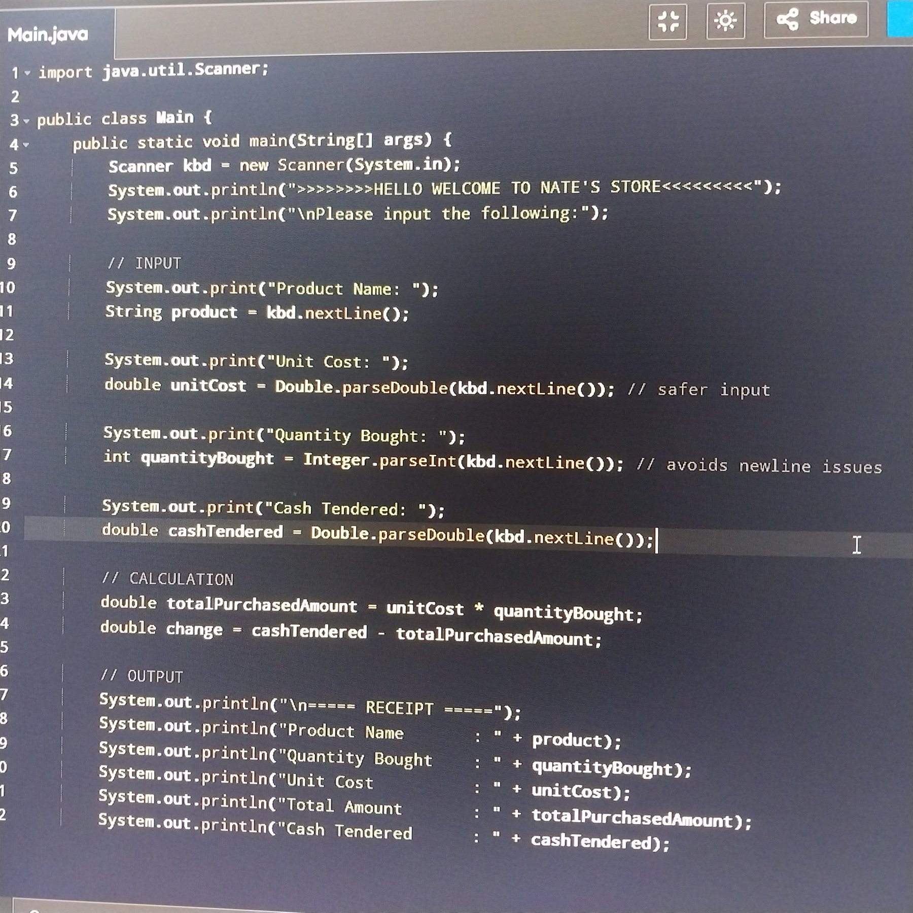
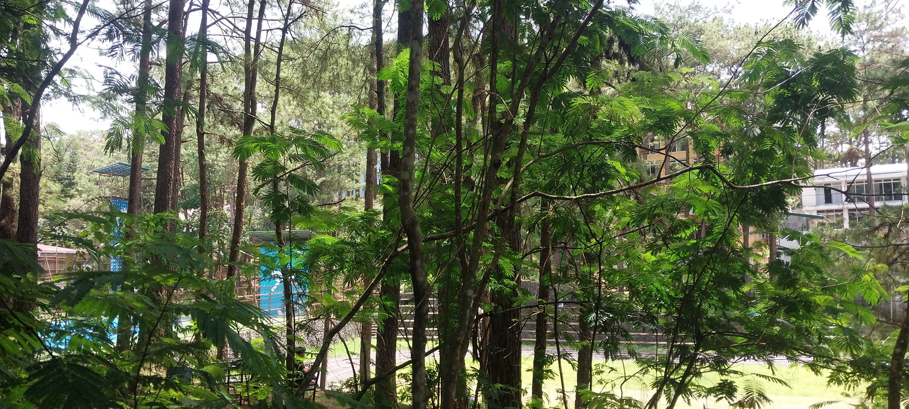
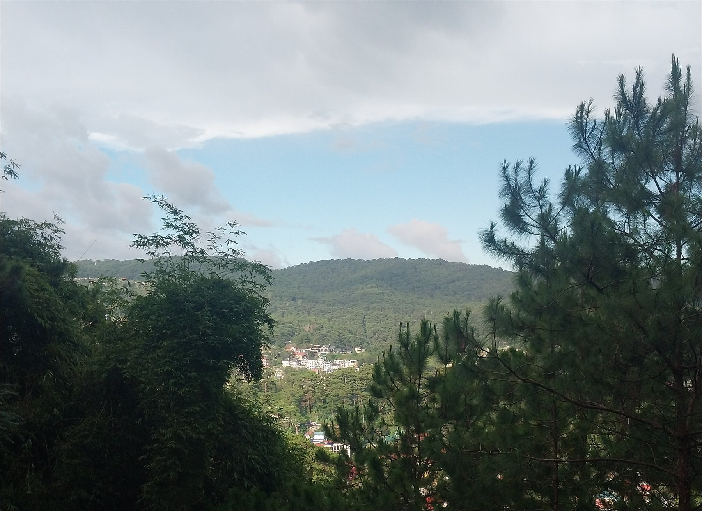
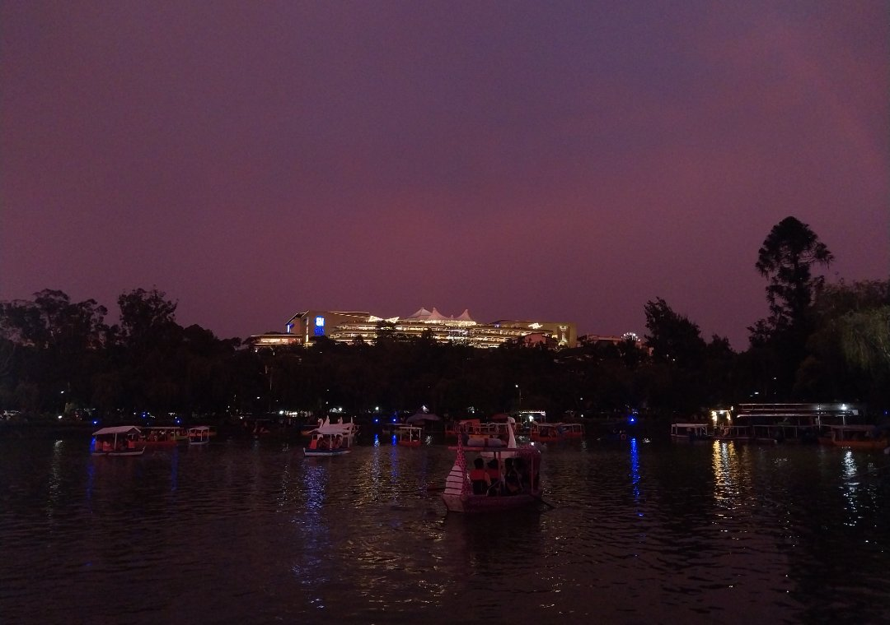
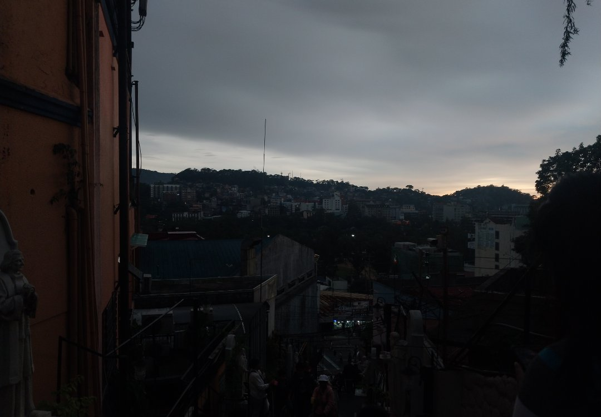
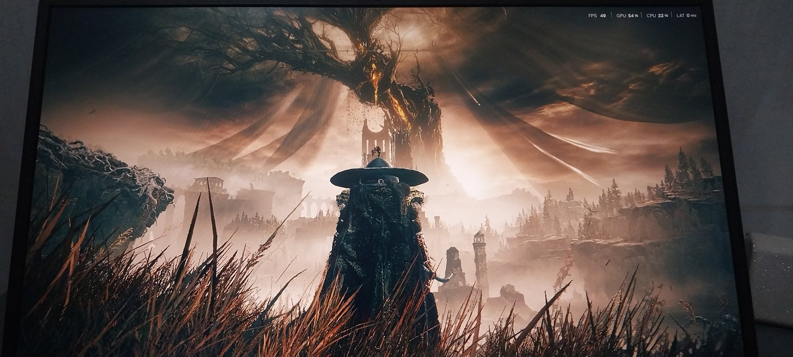
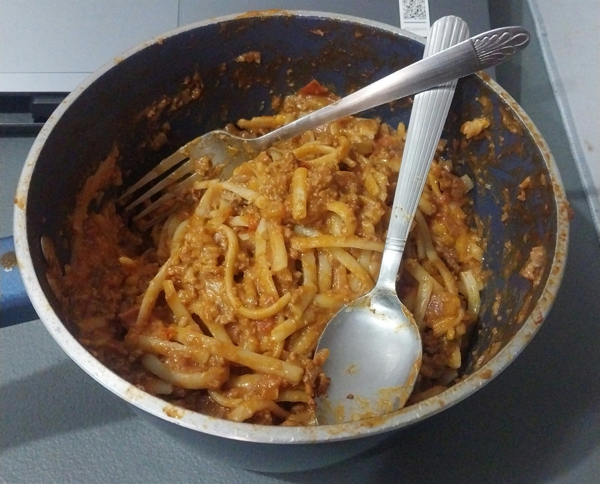
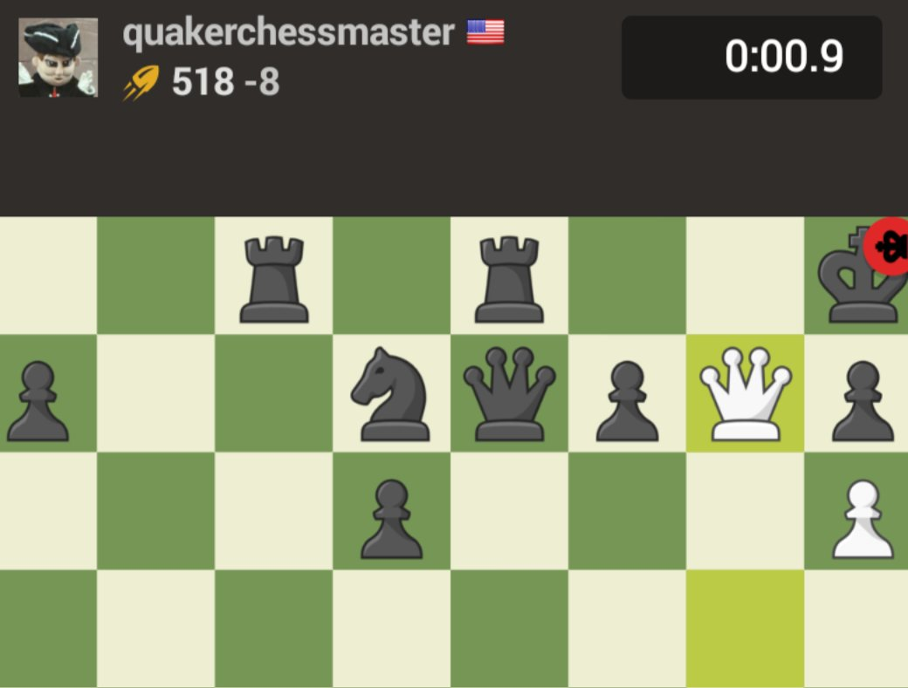
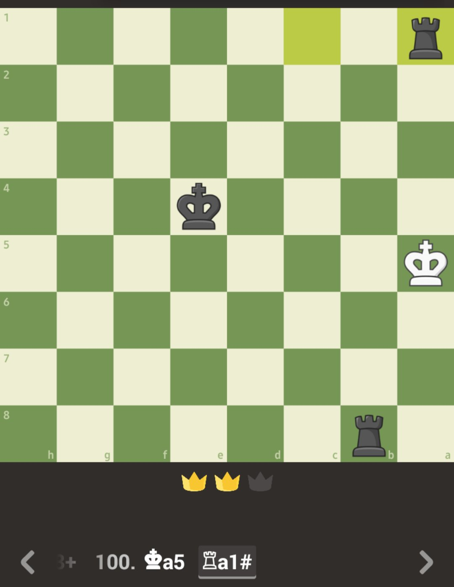

My first year
Some places, pastimes, and small moments from my first year.

Learning by building
A little green space
A familiar view
After the sun goes down
A cloudy afternoon
A gaming break
A home-cooked favorite
One more chess game
Patterns on the board